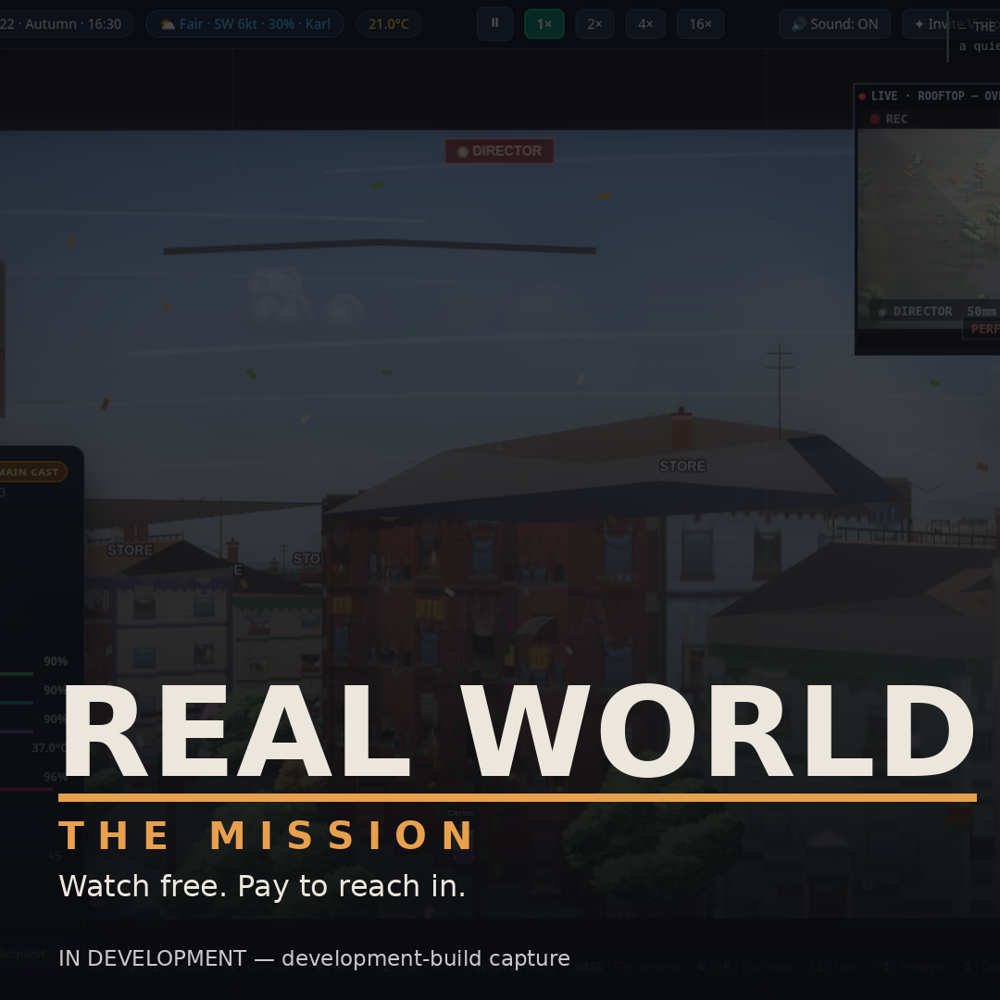
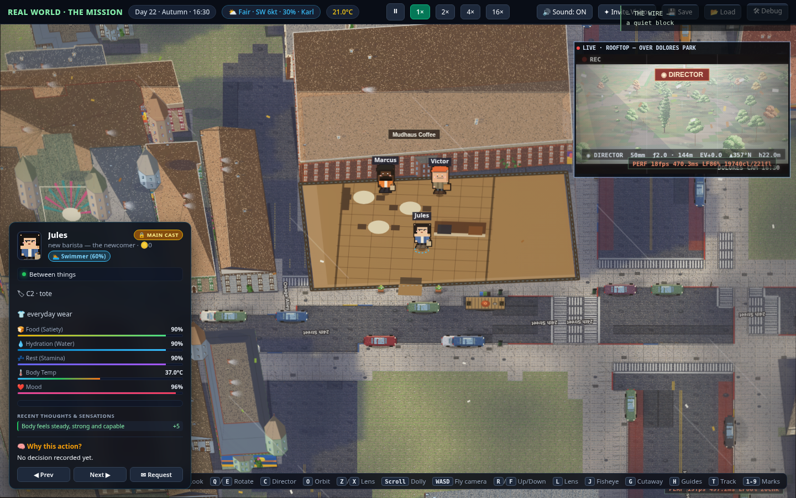
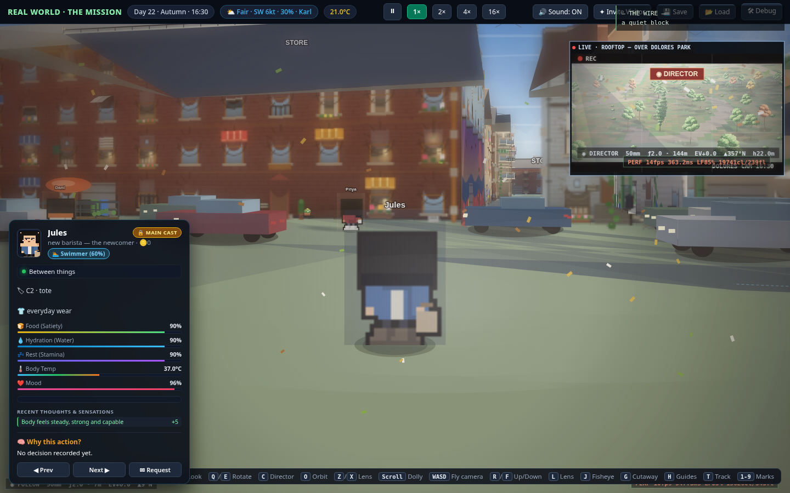
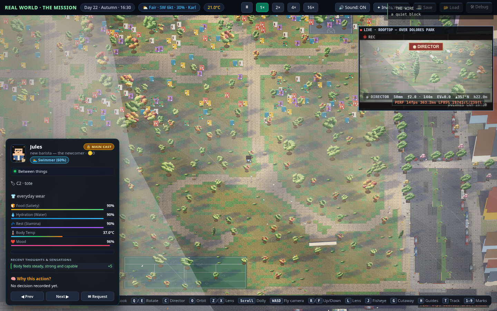
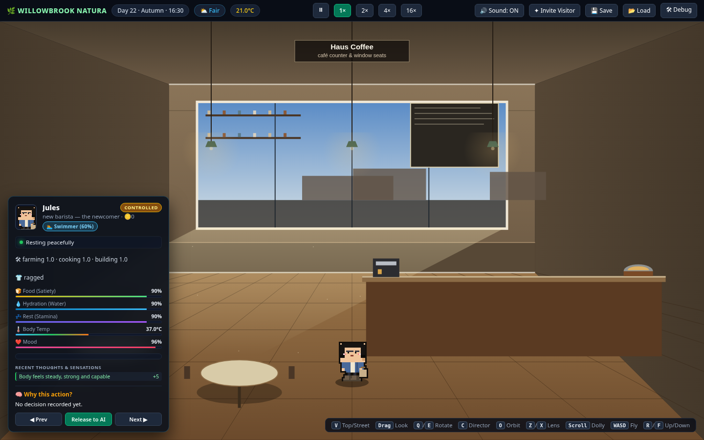
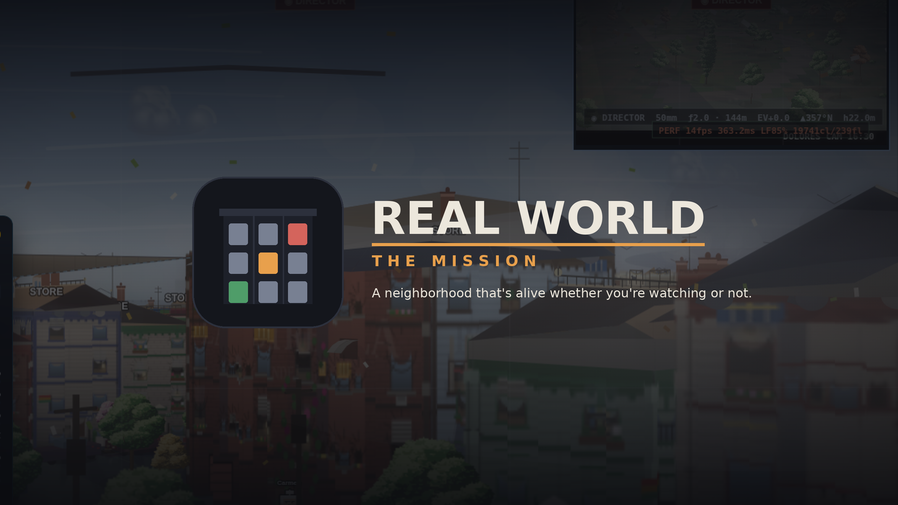
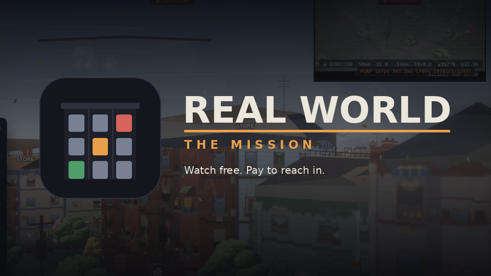
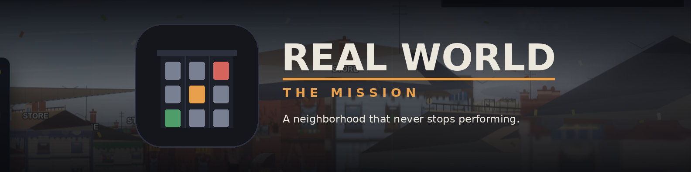
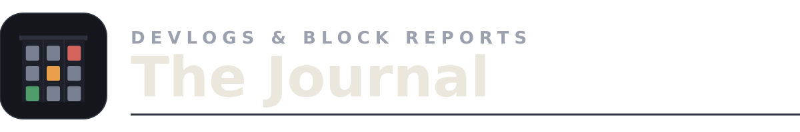

Press kit · pre-launch
A neighborhood that's alive whether you're watching or not.
Real World is a persistent, browser-based "Truman Show": twenty-eight fictional residents live around the clock on real streets around Dolores Park in San Francisco's Mission District. Watching is free, always. Players pay only for agency — time-boxed, publicly logged requests into the world.
Everything in this kit is a real local file. Print-ready fact sheet: fact-sheet.html. Captions and credit lines: captions.txt. Asset usage terms: LICENSE.txt. Anticipated Q&A: press-qa.md. Approved wording: copy-deck.md. Streamer/creator guidance: creator-notes.md. Where this sits vs. Sims / FiveM / Twitch Plays: context.md. Booking a live preview? The run sheet is guided-tour.md. Filming it? The capture guide is b-roll-shotlist.md. On a deadline? deadline-desk.md is the 15-minute path. Working under embargo or writing long-lead? embargo-briefing.md. Reviewing a spectator sim for the first time? review-guide.md. Published something? We log every piece and its accuracy in coverage-log.md. One printable page: one-sheet.html. Visual index of every asset: contact-sheet.html.
The story in three lines
Watch free
The whole neighborhood — the residents, the drama, the public request feed — costs nothing to watch. That is the product's core, not a demo.
Pay to reach in
Agency is sold by the minute: declare an action and a duration, pay credits upfront, hit a hard cap, and watch it play out on the public feed.
Nobody owns the cast
The eight main characters can never be possessed — not by players, not by the game's owner. Their storylines stay authorial; their secrets stay sealed.
Key art


Screenshots — development build







Caption + credit for each file is in captions.txt. Keep the "in development" label when publishing.
Logos
Primary lockup
logos/logo-primary.svg / .png — light text, dark backgrounds only.
Dark-ink lockup
logos/logo-primary-dark.svg — for white/light surfaces.
Icon
logos/logo-icon.svg / .png, logo-icon-mono.svg (single-ink), favicon.svg. Don't recolor, stretch, or redraw the lit-window mark.
Social banners
Pre-sized channel headers, built on a real build capture with safe-zone padding for overlay UI. For our channels at launch — usable by fan/community spaces with attribution.




Program mastheads
Typographic mastheads for our named formats. Programs get type, a cornice rule, and one lit window — never a logo of their own (surfaces may borrow the tile). Dark surfaces only; rules in BRAND.md §21.

Boilerplate
50 words
Real World is a persistent life sim set on a real Mission District block, where 28 fictional residents live 24/7 on AI. Watching is free. Players pay only for agency — time-boxed requests and characters of their own — while the eight main characters can never be possessed by anyone.
150 words
Real World is a browser-based "Truman Show": a persistent life simulation set on real streets around Dolores Park in San Francisco's Mission District. Twenty-eight fictional residents — eight main characters with full AI minds and twenty ambient neighbors — live, work, feud, and make up around the clock, whether anyone is watching or not. Watching is free, always. Players who want to reach in buy agency, not access: a request declares an action and duration upfront, prices it in credits, caps it hard, and posts it to a public feed everyone can read. The eight mains can never be possessed — by players or by the game's own owner — and every secret stays theirs to leak. Players who move in rent, work, and climb the neighborhood's oldest ladder: tenant, owner, landlord.
Documents in this kit
- Print-ready fact sheet
fact-sheet.html - Launch press release — draft, slots marked
press-release-launch.md - Media alert — 120-word launch-day "it's live" notice
media-alert.md - Interview prep — spokesperson sheet (internal)
interview-prep.md - Kit changelog — freshness record
CHANGELOG.md - Anticipated press Q&A
press-qa.md - Copy deck — approved wording + phrases to avoid
copy-deck.md - Streamer/creator coverage notes
creator-notes.md - Context sheet — honest comparisons vs. Sims, FiveM, Twitch Plays, Second Life
context.md - Guided tour — the 10-minute press-preview run sheet
guided-tour.md - B-roll shotlist — capture guide for video press & creators
b-roll-shotlist.md - Deadline desk — the 15-minute coverage path
deadline-desk.md - What's new — build-highlights sheet (v53→v55→v59→v61→v65→v67→v71→v75→v76→v80→v83)
whats-new.md - AI transparency — what's AI-driven, what isn't, the control rules
ai-transparency.md - One-sheet — single-page printable sell sheet (Print → PDF)
one-sheet.html - Embargo briefing — long-lead pre-brief book + embargo terms
embargo-briefing.md - Review guide — how to watch a spectator sim (30/90/evening)
review-guide.md - Contact sheet — printable visual index of every image asset
contact-sheet.html - Per-asset captions + credit lines
captions.txt - Quotes & boilerplate — approved team quotes + 25/50/100-word blurbs
quotes-boilerplate.md - Pitch emails — tailored outreach drafts by desk (unsent)
pitch-emails.md - Awards & festivals — submission target calendar
awards-festivals.md - Coverage log — post-launch tracker: pieces, accuracy checks, corrections
coverage-log.md - Asset usage terms
LICENSE.txt - Kit manifest
manifest.json - Usage + accuracy notes
README.txt
Contact
[press@ — placeholder, set at launch]
[studio name — placeholder] ·
[domain — placeholder]
Pre-launch kit. Contact fields go live when the owner approves launch; nothing here has been published.